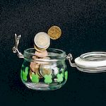

Financial Independence, Retire Early (FIRE) is a financial movement defined by frugality and extreme savings and investment
By saving up to 70% of their annual income, FIRE proponents aim to retire early and live off small withdrawals from their accumulated funds
Typically, FIRE followers withdraw 3% to 4% of their savings annually to cover living expenses in retirement
Detailed planning, economic discipline, and wise investment are key components in achieving a FIRE retirement